Master specialized continuous and discrete visualizations. Learn how to shade volumes with fill_between(), stack additive streams with stackplot(), map interval states with step() and stairs(), and plot discrete point impulses with stem().
Imagine karo tum apne room ka temperature har ghante record kar rahe ho:
| Plot Type | What it Emphasizes | Underlying Data Nature | Real-Life Example |
|---|---|---|---|
Area Plot (fill_between) |
Magnitude, cumulative volume, and baseline difference | Continuous rates or quantities over time | Website traffic volume, daily energy generation |
Step Plot (step / stairs) |
Values held constant between discrete update events | Interval-based states, discrete state machines | Electricity peak tariffs, warehouse inventory levels |
Stem Plot (stem) |
Individual point measurements relative to a reference baseline | Discrete digital samples, non-continuous events | Daily quiz marks, digital signal clock ticks, P&L |
Neeche dekhiye kaise 7 dino ke website visitor data par teeno plots alag-alag analytical story convey karte hain:
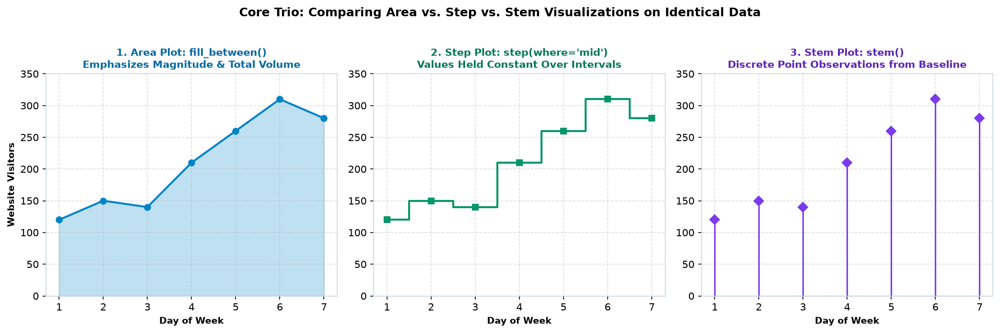
Figure 9.1: The core trio. Left: Area plot fills the volume. Center: Step plot holds values across intervals. Right: Stem plot highlights discrete day observations from baseline.
Matplotlib mein area plots banane ke liye hum ax.fill_between(x, y1, y2=0) use karte hain. Yeh function X-axis ke points ke along do curves (ya curve aur baseline) ke beech ke region ko polygon banakar fill karta hai.
import matplotlib.pyplot as plt
week_days = ['Mon', 'Tue', 'Wed', 'Thu', 'Fri', 'Sat', 'Sun']
daily_traffic = [3200, 4100, 3900, 5200, 6100, 4800, 3500]
fig, ax = plt.subplots(figsize=(8, 4.5), dpi=150)
# Draw upper boundary line
ax.plot(week_days, daily_traffic, color='#0284c7', linewidth=2.5, marker='o')
# Fill volume down to baseline y=0
ax.fill_between(week_days, daily_traffic, color='#0284c7', alpha=0.2)
ax.set_title("Weekly Tech Blog Traffic (Baseline y = 0)", fontsize=12, fontweight='bold')
ax.set_xlabel("Day of Week")
ax.set_ylabel("Active User Sessions")
ax.grid(axis='y', linestyle='--', alpha=0.5)
fig.tight_layout()
plt.show()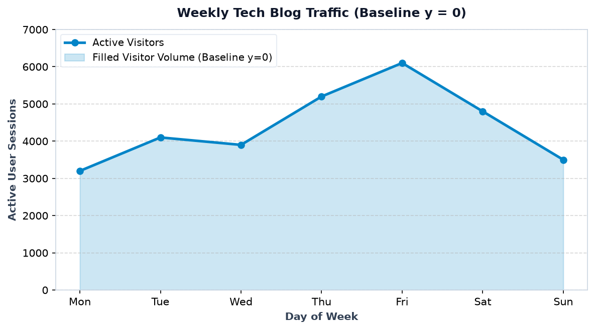
Figure 9.2: Basic area plot. Shaded region emphasizes the total cumulative traffic volume throughout the week.
Agar hum ek benchmark line add karein (jaise 5.0 hours daily study target), toh area plot effort ko visualize karne ke liye powerful dashboard ban jata hai:
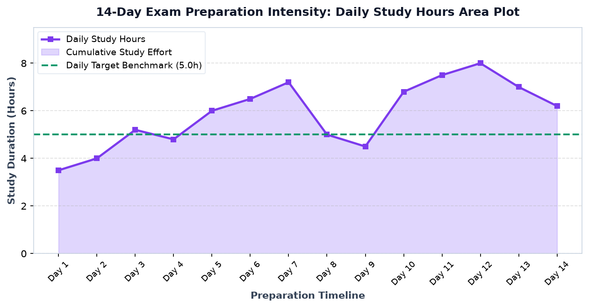
Figure 9.3: 14-day study intensity area plot. Total study effort = 82.2 hours (average 5.9h/day), with 10 days exceeding the 5.0h daily target benchmark.
Area plot ka purpose sirf color bharna nahi hota. Usme meaningful baselines aur annotations add karne se data ki readability 10x improve ho jaati hai:
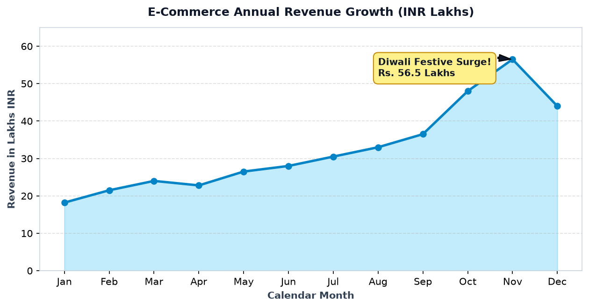
Figure 9.4: Annual e-commerce revenue growth. Shaded area communicates cumulative annual turnover (Rs. 389.5 Lakhs), with an arrow highlighting the Diwali peak in November (Rs. 56.5 Lakhs).
By default, fill_between y=0 tak fill karta hai. Lekin room temperature ke case mein 0°C tak fill karna physically meaningless hai! Agar hum baseline y2=20.0 set karein, toh shaded region strictly Thermal Gain (Excess Heat) ko represent karega:
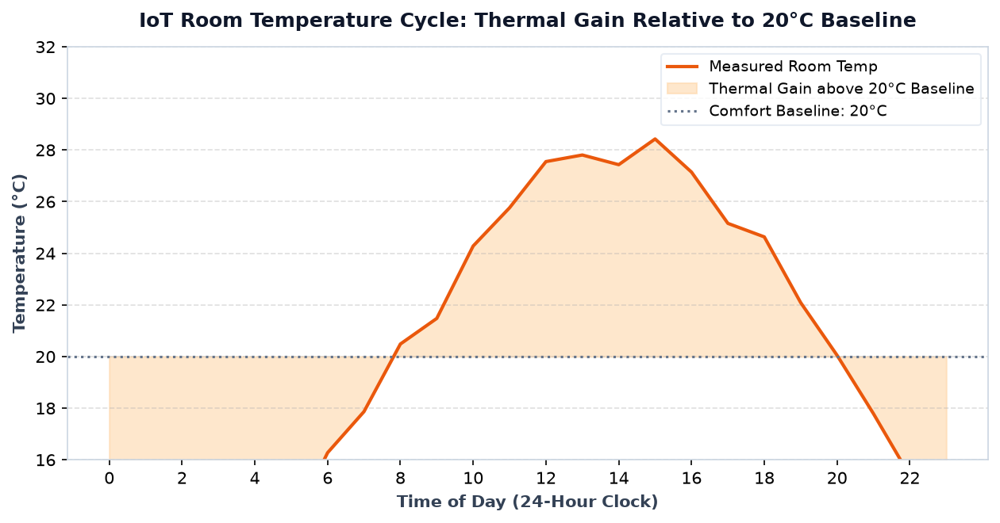
Figure 9.5: Room temperature cycle filled relative to a comfortable 20°C ambient baseline.
Kya aap chahte hain ki jab sales target se upar ho toh Green shade ho aur jab target se neeche ho toh Red shade ho? Matplotlib ka where argument exactly yahi karta hai!
ax.fill_between(x, y, target, where=(y >= target), interpolate=True, color='green')interpolate=True lagana mandatory hota hai taaki jahan curve target line ko cross kare, wahan polygon cleanly intersect kare bina jagged gaps chhode!
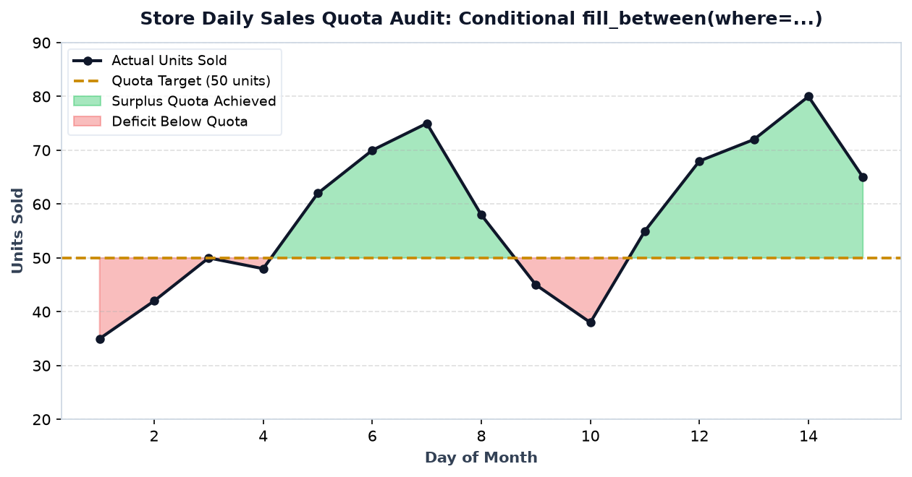
Figure 9.6: Quota audit. Green indicates 10 days of surplus sales above 50 units, while red highlights 5 deficit days requiring attention.
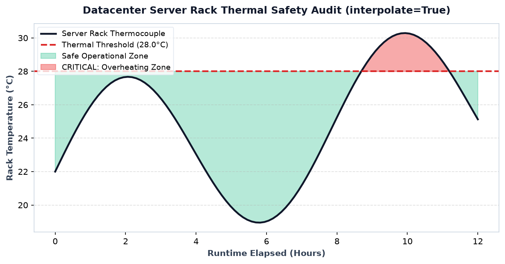
Figure 9.7: Server rack thermal audit. Hours exceeding the 28.0°C safety threshold are shaded red to trigger automated HVAC cooling alerts.
Jab aapke paas do continuous series hon (e.g. Actual Revenue vs Planned Budget, ya Actual Power vs Expected Power), toh dono ke beech ka difference shade karna visual analysis ka gold standard hai:
# Pass curve 1 (actual) and curve 2 (target)
ax.fill_between(months, actual_rev, target_rev, where=(actual_rev >= target_rev),
interpolate=True, color='#10b981', alpha=0.4, label='Surplus Revenue')
ax.fill_between(months, actual_rev, target_rev, where=(actual_rev < target_rev),
interpolate=True, color='#f43f5e', alpha=0.4, label='Deficit / Shortfall')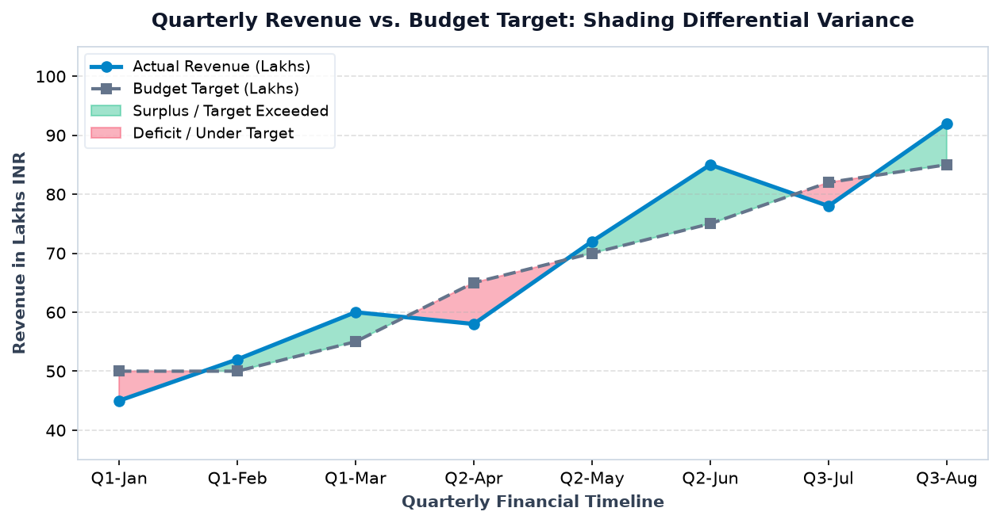
Figure 9.8: Quarterly revenue differential. Total actual sales = Rs. 542 Lakhs vs Target = Rs. 532 Lakhs (Net Surplus = +10 Lakhs).
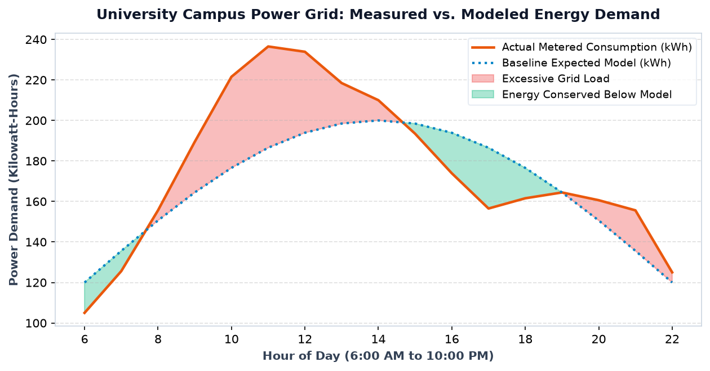
Figure 9.9: Campus electrical load. Red highlights mid-day peak demand overload, green highlights night-time conservation savings.
Jab multiple data streams milkar ek grand total banate hain (Additive Quantities), toh hum Stacked Area Plot use karte hain:
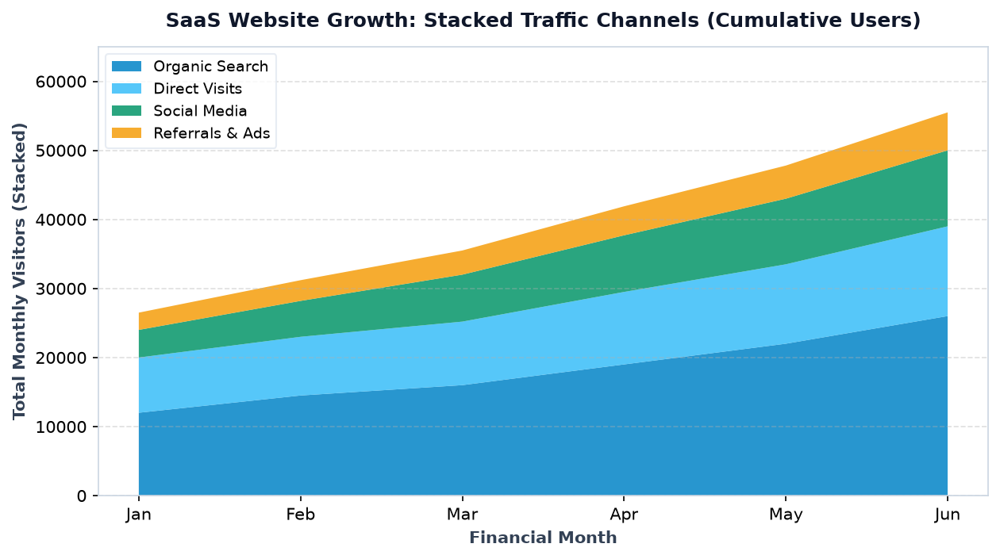
Figure 9.10: Stacked website traffic channels. Cumulative monthly users grew from 26,500 in January to 55,500 in June.
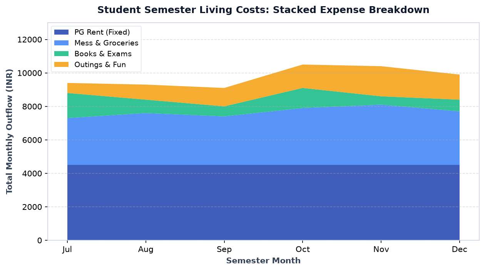
Figure 9.11: Student monthly expense breakdown across Rent (fixed), Food, Study, and Outings.
Normal line plot points ko straight diagonal line se connect karta hai. Lekin real-world mein bohot saari cheezein gradually change nahi hoti — woh ek constant value par rehti hain aur achanak jump karti hain!
Matplotlib mein step plots ax.step(x, y, where=...) se bante hain. Isme where parameter decide karta hai ki jump kab hota hai:
| Option | Transition Behavior | When to Use? |
|---|---|---|
where='post' (Most Common) |
Value agle point tak constant rehti hai, aur agle X par jump karti hai | Tariffs, inventory restocks, machine state holds |
where='pre' |
Value current point par aate hi pehle jump karti hai, phir constant rehti hai | Pre-emptive price updates, schedule announcements |
where='mid' |
Transition dono sample points ke theek aadhe raste (midpoint) par jump karta hai | Binned sensor averages, symmetric continuous approximations |
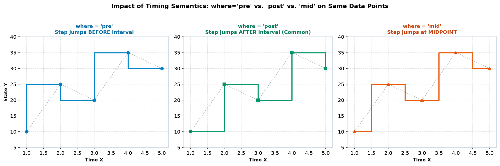
Figure 9.12: Identical data plotted with where='pre', 'post', and 'mid'. Notice how the step transition timing changes completely!
Bijli ki dar (tariff) har ghante nahi badalti, balki pre-defined blocks mein constant rehti hai:
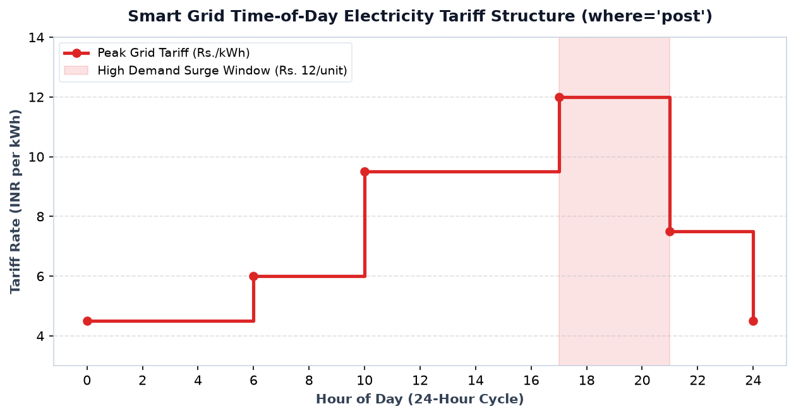
Figure 9.13: Stepped power tariff. Red shaded region highlights the 5 PM - 9 PM surge window where power costs Rs. 12/unit.
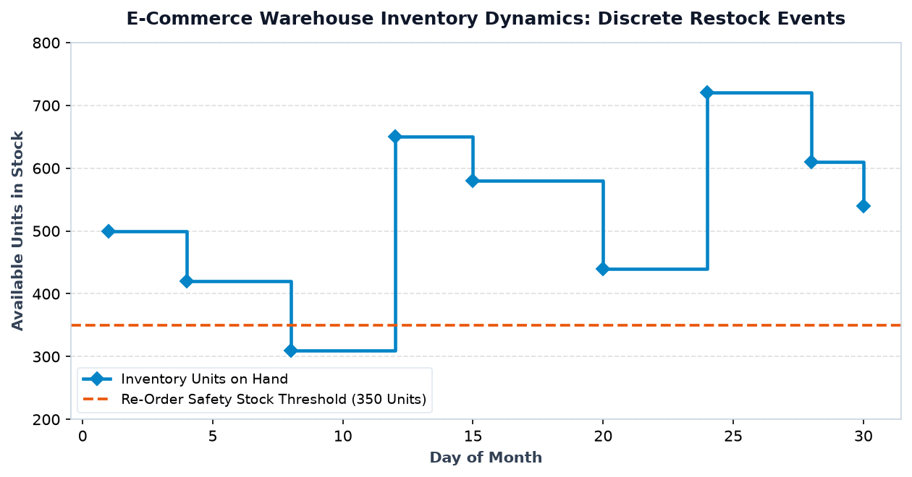
Figure 9.14: Warehouse stock levels. Vertical jumps show discrete shipment deliveries, maintaining stock safely above the 350-unit threshold.
Matplotlib mein step visualization ke do functions hain. Dono ka data input format different hota hai:
ax.step(x, y): Points-based hota hai (X aur Y arrays ki length equal honi chahiye).ax.stairs(values, edges): Histogram/interval-based hota hai (edges ki length exactly len(values) + 1 honi chahiye!).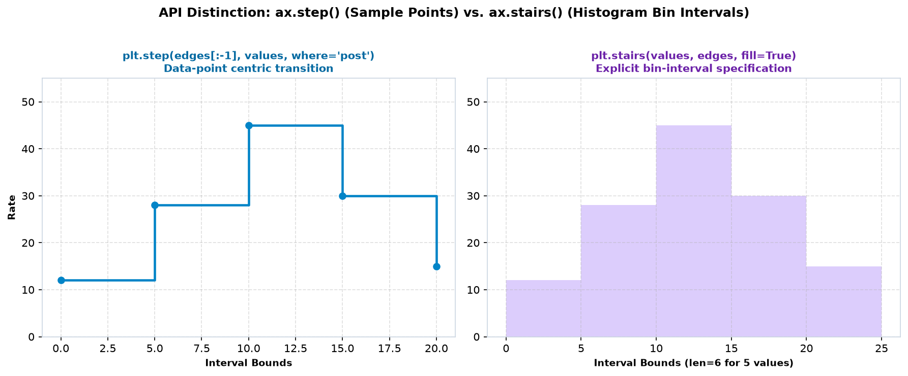
Figure 9.15: API distinction. Left: ax.step() connecting sample points. Right: ax.stairs() natively accepting 6 interval edges for 5 values with shaded fill.
Stem Plot (jise discrete lollipop plot bhi kehte hain) har data point ko ek horizontal reference baseline se ek vertical line ("stem") aur circular dot ("marker") ke sath connect karta hai.
Yeh tab sabse best hota hai jab data continuous nahi hota, balki discrete isolated events hote hain:
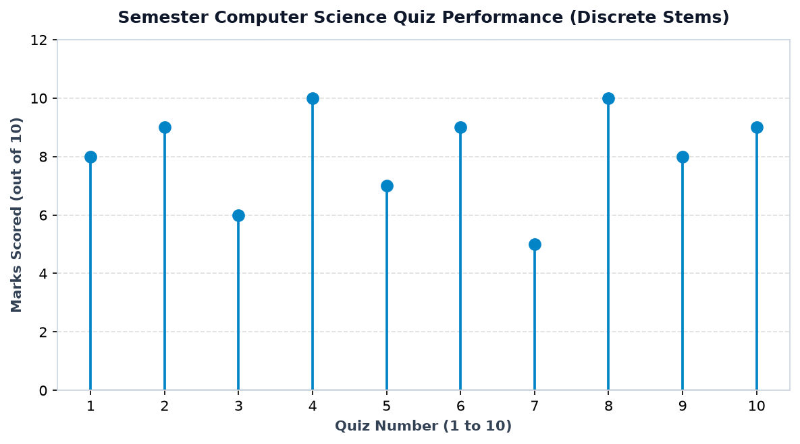
Figure 9.16: Discrete semester quiz performance. Each stem clearly communicates the height of individual quiz scores without confusing connecting lines.
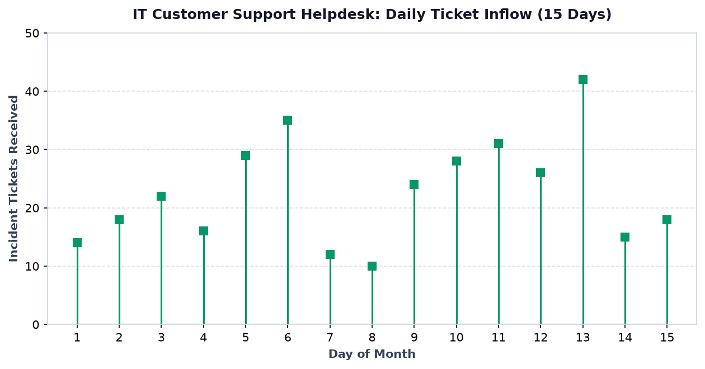
Figure 9.17: Daily customer support ticket inflow across 15 days.
ax.stem() ek StemContainer return karta hai jisme 3 editable graphical elements hote hain:
markerline: Point markers (e.g. triangles, diamonds, circles).stemlines: Vertical stem lines connecting to baseline.baseline: Horizontal reference line (default y=0).markerline, stemlines, baseline = ax.stem(x, y, linefmt='#d97706', markerfmt='^', basefmt='#1e293b')
plt.setp(markerline, markersize=9, color='#d97706')
plt.setp(stemlines, linewidth=2.0, linestyle='--')
plt.setp(baseline, linewidth=1.8, color='#0f172a')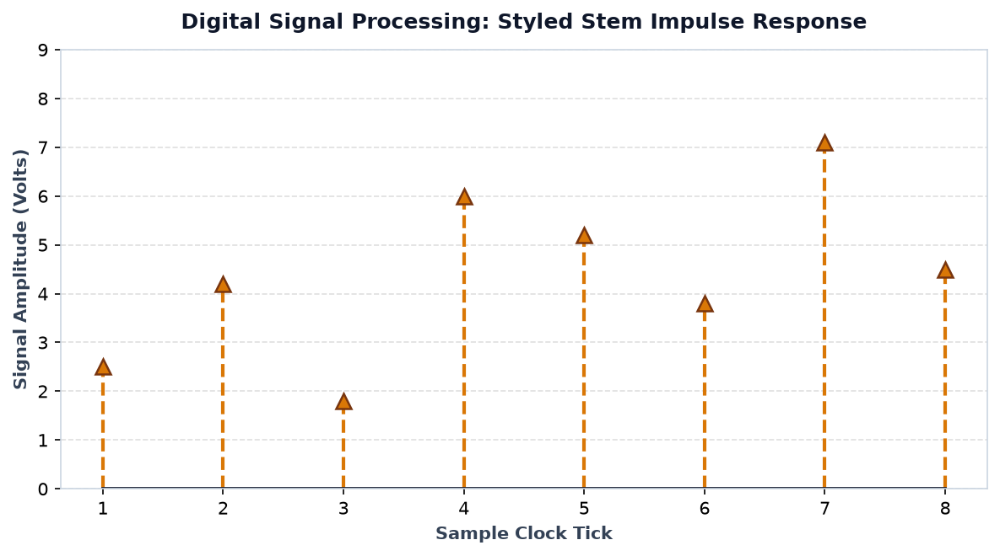
Figure 9.18: Digital signal processing impulse response with customized dashed stems, triangular markers, and reinforced baseline.
Stem plots ki sabse badi strength hoti hai positive aur negative deviations ko cleanly visualize karna:
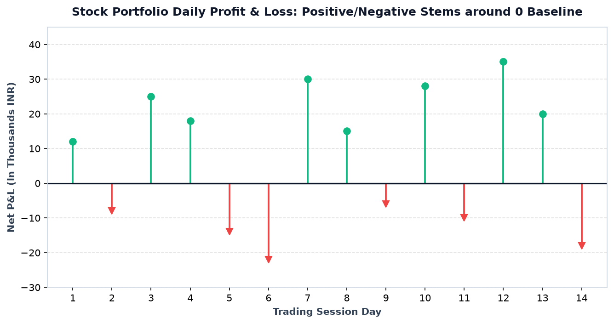
Figure 9.19: Daily P&L. Green stems point upwards for profitable days (+Rs. 1,05,000 net P&L across 8 green days), while red stems hang downwards for 6 loss sessions.
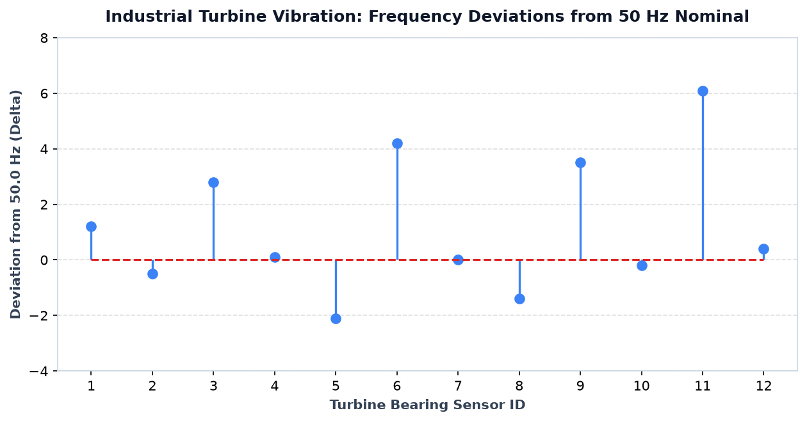
Figure 9.20: Bearing frequency deviations plotted relative to a nominal 50.0 Hz baseline.
Mistake: where=... condition mein curve crossing ke waqt blank triangular gaps banna.
Fix: Hamesha interpolate=True pass karein.
Mistake: len(edges) == len(values) pass karna jo crash karega.
Fix: Remember: len(edges) must be exactly len(values) + 1.
Mistake: Continuous hold data mein 'pre' lagana jisse future value pehle show ho jaye.
Fix: Held states ke liye hamesha standard where='post' use karein.
Mistake: Room temperature ko 0°C tak fill karna.
Fix: Explicit baseline define karein: fill_between(x, y, 20.0).
Mistake: Percentages ya conversion rates ko stackplot mein pass karna.
Fix: Stacking sirf additive volume (users, money, kWh) par karein.
Mistake: 500 points par stem plot banana jisse solid barcode ban jaye.
Fix: Dense data ke liye Line plot ya Scatter plot use karein.
Mistake: alpha=1.0 lagane se grid lines aur secondary curves hide ho jana.
Fix: Use soft transparency: alpha=0.25 to 0.4.
Mistake: Baseline ko linear trendline samajhna.
Fix: Baseline sirf ek reference line (zero/nominal) hoti hai.
Mistake: Stackplot ke colors ka meaning mention na karna.
Fix: labels=[...] pass karein aur ax.legend() call karein.
Mistake: X mein 7 elements aur Y mein 8 elements pass karna.
Fix: Check len(x) == len(y) before plotting.
Mistake: Label mein sirf "Power" likhna bina bataye ki kW hai ya MW.
Fix: Always specify units: "Power Demand (kWh)".
Mistake: Profit/loss plot mein zero baseline ko invisible chhodna.
Fix: Reinforce zero baseline with ax.axhline(0, color='black').
Ek smart building ke server room ka 24-hour thermal cycle audit. Hum 4 subplots mein different analytical views create karenge:
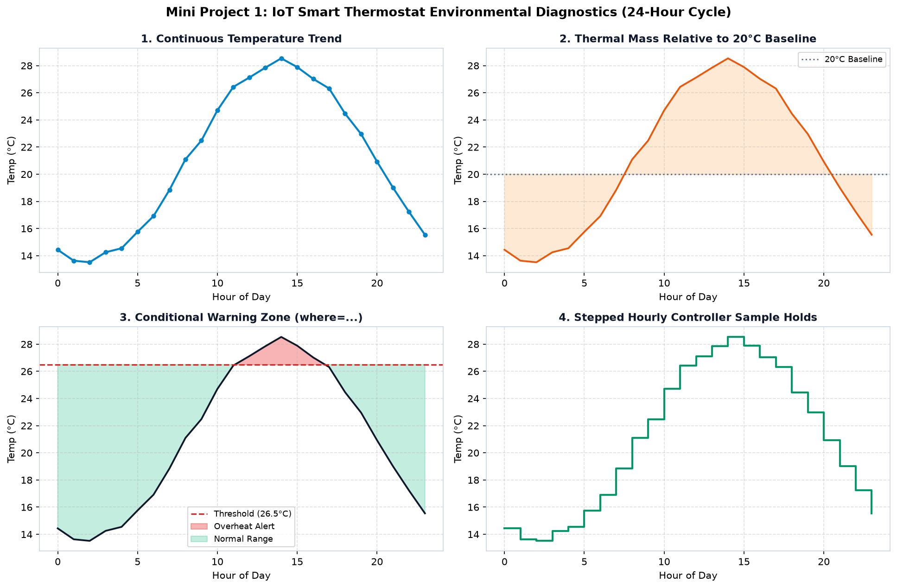
Figure 9.21: 4-panel IoT environmental diagnostics. Temperature spans 13.5°C to 28.5°C, with exactly 5 critical hours exceeding the 26.5°C threshold.
Ek e-commerce business ke financial revenue targets aur daily order fulfillment logistics ka audit:
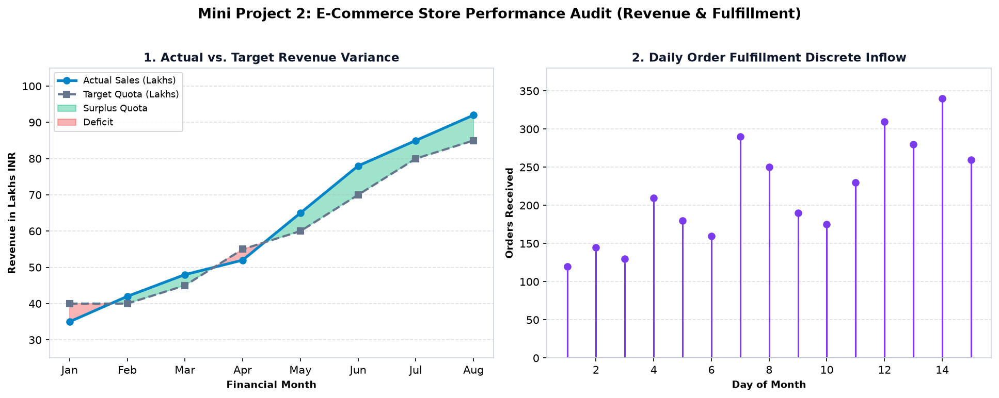
Figure 9.22: Panel 1: Monthly actual vs target revenue variance with surplus shaded green. Panel 2: Daily order fulfillment discrete inflow (3,270 total orders across 15 days).
| Plot Type | Primary Goal | Best Data Fit | One Major Limitation |
|---|---|---|---|
| Line Plot | Showing rate of change and continuous trend | Smooth continuous functions (e.g. stock price, temperature) | Does not emphasize total cumulative volume. |
| Area Plot | Emphasizing volume, magnitude, and baseline difference | Volume over time (e.g. traffic volume, energy generated) | Meaningless if baseline has no physical interpretation. |
| Conditional Area | Highlighting quota surplus, deficits, or warning zones | Data compared against a benchmark (e.g. target vs actual) | Requires careful mask alignment and interpolate=True. |
| Stacked Area | Showing part-to-whole breakdown of an additive total over time | Additive streams (e.g. traffic channels, expense categories) | Upper layers have floating baselines, making comparison hard. |
| Step Plot | Showing state changes held constant between events | Interval data (e.g. tariffs, inventory restocks, machine status) | Can look confusing if data is truly smoothly changing. |
| Stairs Plot | Displaying binned histogram rates with explicit boundaries | Histogram bins and discrete mathematical steps | Requires explicit len(edges) == len(values) + 1. |
| Stem Plot | Emphasizing isolated discrete observations from a baseline | Signal samples, daily quiz marks, P&L deviations | Becomes an illegible barcode if $N > 40-50$. |
| Bar Chart | Comparing distinct categorical quantities | Categorical items (e.g. sales by city, student branches) | Does not naturally represent continuous time-flow. |
Scenario: Ek smart solar home 24 ghante ka energy audit kar raha hai. Rooftop solar panels din mein power generate karte hain, jabki household appliances (AC, fridge, lights) continuous power demand karte hain.
Task: Solar generation curve aur Home demand curve ke beech fill_between lagakar calculate kijiye ki kitna surplus solar energy battery mein charge hua aur kitna deficit grid se draw kiya gaya!
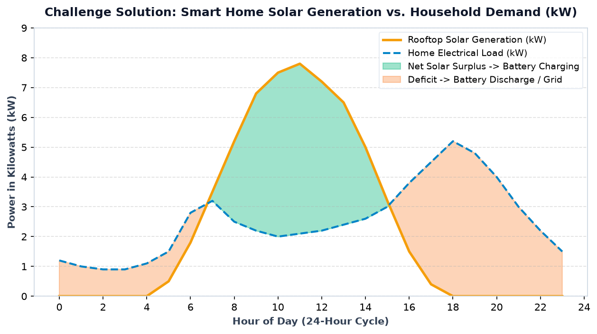
Figure 9.23: Solar energy audit. Green indicates solar surplus charging the home battery (30.5 kWh), while orange highlights power drawn from the battery/grid (34.2 kWh).
| Function | Key Parameters | Standard Usage Snippet |
|---|---|---|
ax.fill_between() |
x, y1, y2=0, where=..., interpolate=True, alpha=0.3 |
ax.fill_between(x, y, 0, color='#0284c7', alpha=0.25) |
ax.stackplot() |
x, y1, y2, ..., labels=[...], colors=[...] |
ax.stackplot(x, series1, series2, labels=['A', 'B']) |
ax.step() |
x, y, where='pre'|'post'|'mid', linewidth=2 |
ax.step(time, state, where='post', marker='s') |
ax.stairs() |
values, edges, fill=True, baseline=0 |
ax.stairs(values, edges, fill=True, alpha=0.3) |
ax.stem() |
x, y, linefmt='...', markerfmt='...', basefmt='...' |
m, s, b = ax.stem(x, y, linefmt='#0284c7') |
alpha=0.25 to 0.4 ensures underlying gridlines and secondary curves remain visible.Core Charts complete karne ke baad agla stage hai Customization & Styling Mastery!
Matplotlib Topic 10: Labels, Titles, Legends & Grids mein aap seekhenge:
fig.suptitle) aur professional typography standards!